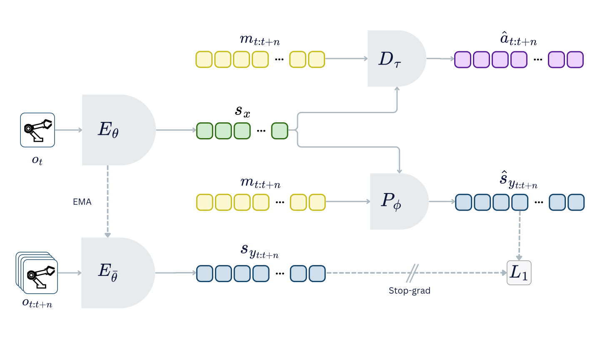
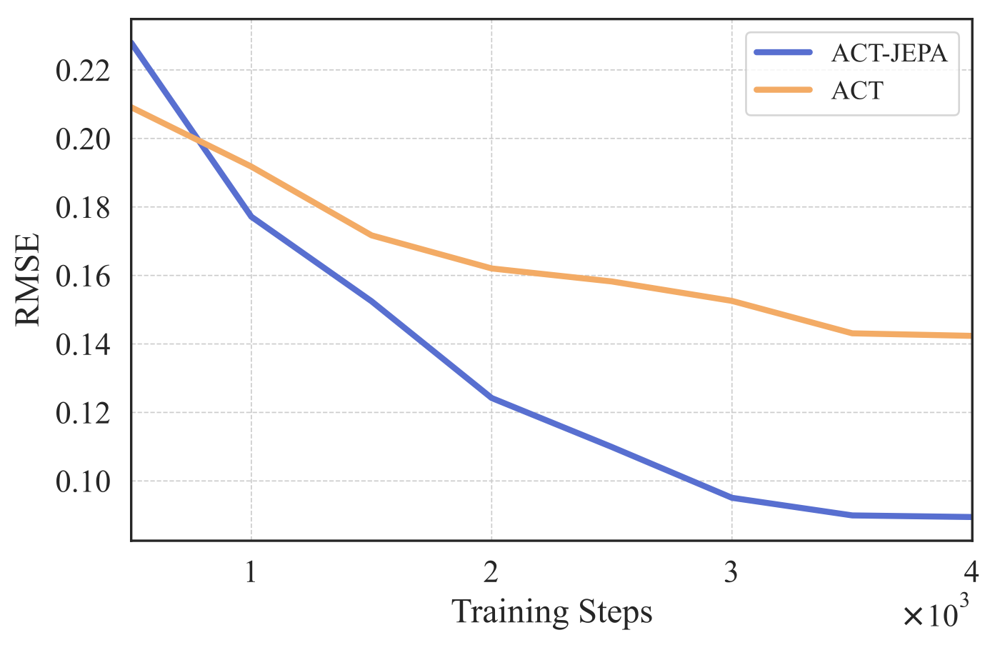
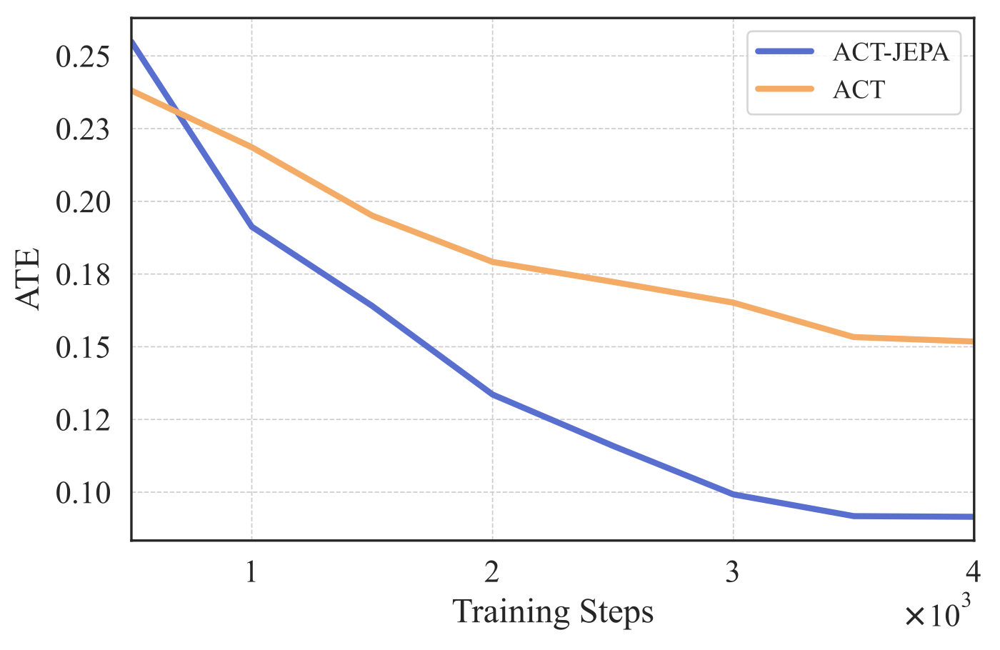
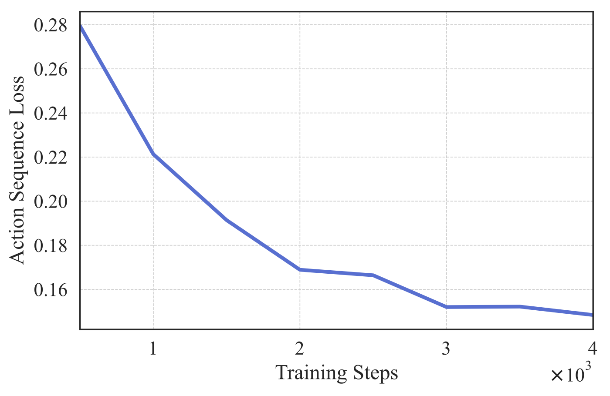

Abstract
Learning efficient representations for decision-making policies is a challenge in imitation learning (IL). Current IL methods require expert demonstrations, which are expensive to collect. Additionally, they are not explicitly trained to understand the environment. Consequently, they have underdeveloped world models. Self-supervised learning (SSL) offers an alternative, as it can learn a world model from diverse, unlabeled data. However, most SSL methods are inefficient because they operate in raw input space. In this work, we propose ACT-JEPA, a novel architecture that unifies IL and SSL to enhance policy representations. It is trained end-to-end to jointly predict action sequences and latent observation sequences. To learn in latent space, we utilize Joint-Embedding Predictive Architecture, which allows the model to filter out irrelevant details and learn a robust world model. ACT-JEPA is evaluated in different environments and across multiple tasks. Results show that it outperforms the strongest baseline in all environments, achieving up to 40% improvement in world model understanding and up to 10% higher task success rate.
Method
ACT-JEPA is an architecture designed to improve action prediction and world model understanding. The model learns to generate executable actions using IL, while simultaneously learning a latent world model using JEPA. The world model is developed by learning to predict future states in latent space, allowing the model to focus on high-level semantic information instead of irrelevant details. This approach enables efficient learning, develops a robust world model, and improves action prediction.
Results
We evaluate ACT-JEPA on three simulated benchmarks: Push-T, ManiSkill, and Meta-World. The experiments test whether the model learns useful environment dynamics, whether those representations improve control, and whether end-to-end training is better than separating world-model learning from policy learning.
World Model Understanding
We track world model understanding by testing whether the learned representations can reconstruct future states (trajectories). Compared to ACT, which is trained only for action prediction, ACT-JEPA predicts future states more accurately across all benchmarks, reducing RMSE by 29–37% and ATE by 29–40%.


Policy Performance
Beyond world modeling, ACT-JEPA also improves decision-making. It achieves the highest task success rate across the evaluated benchmarks, improving over ACT by 7% on Push-T, 10% on ManiSkill, and 2% on Meta-World.
| Method | Push-T | ManiSkill | Meta-World |
|---|---|---|---|
| AR transformer | 0% | 8% | 38.3% |
| ACT | 34% | 26% | 90% |
| ACT-JEPA | 41% | 36% | 92% |
Representation Transfer
We isolate the JEPA world-modeling objective to test whether it learns features that transfer beyond state prediction to action prediction. As pretraining progresses, action reconstruction loss decreases, suggesting that world model representations learned via JEPA generalize to the action prediction task.

Joint Optimization
We compare end-to-end training with a two-stage pipeline that learns the world model first and the policy afterward. By learning both actions and the world model jointly, ACT-JEPA develops more robust representations.
| Method | Push-T | ManiSkill | Meta-World |
|---|---|---|---|
| Two-stage approach | 27% | 0% | 23.3% |
| ACT-JEPA | 41% | 36% | 92% |
BibTeX
@article{vujinovic2025actjepa,
title = {ACT-JEPA: Novel Joint-Embedding Predictive Architecture for Efficient Policy Representation Learning},
author = {Vujinovic, Aleksandar and Kovacevic, Aleksandar},
journal = {arXiv preprint arXiv:2501.14622},
year = {2025}
}